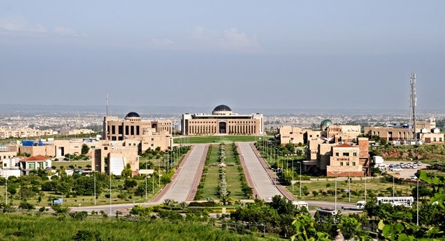

Gallery
Each picture is inside a floated box, two per row. The odd boxes clear the row above so a tall picture never leaves a gap in the layout.



About these pictures
Sources and licences are listed in the README that ships with the project. The Substack mark is a logo rather than a photograph, so it is shown at its own size instead of being stretched to fill the tile.